Overview of North India
North India is one of the most popular regions for travellers. It includes the Himalayan mountains, the Thar desert, fertile plains, and some of India’s most famous historical cities. Travellers come here for snow-covered peaks, royal palaces, sacred rivers and world-famous monuments like the Taj Mahal. This region is ideal for history lovers, nature enthusiasts, spiritual seekers and adventure travellers.
Top Cities to Visit in North India
These cities give a balanced experience of history, culture, nature and spirituality. A traveller can choose 2–3 of them based on time and interest.
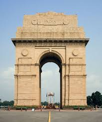
Delhi – Capital City
Delhi combines old and new India. Travellers can see the Red Fort, India Gate, Qutub Minar and Lotus Temple, then explore colourful markets like Chandni Chowk and Connaught Place. The metro makes it easy to move around.
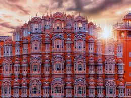
Jaipur – The Pink City
Jaipur is known for grand forts and palaces such as Amber Fort, City Palace and Hawa Mahal. It is perfect for travellers who love royal history, traditional architecture and local bazaars with handicrafts and jewellery.
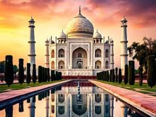
Agra – City of the Taj Mahal
Agra is home to the Taj Mahal, one of the Seven Wonders of the World. Travellers usually combine it with visits to Agra Fort and nearby Fatehpur Sikri. It is best for those who want a short, focused heritage visit.
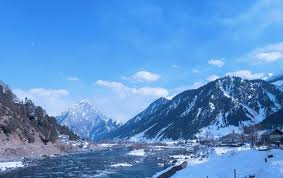
Manali – Mountain Escape
Manali is a hill station surrounded by snow-capped peaks and rivers. It is popular for trekking, paragliding and visiting Solang Valley or Rohtang Pass. Ideal for nature and adventure lovers.
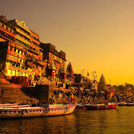
Varanasi – Spiritual Capital
Varanasi is one of the oldest living cities in the world. Travellers come here to see the Ganga Aarti, walk along the ghats and experience the spiritual side of India. It is a good choice for cultural and religious tourism.
Famous Attractions in North India
These landmarks are often included in almost every North India travel plan.
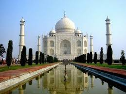
Taj Mahal, Agra
Iconic white marble mausoleum and symbol of love, best visited at sunrise or sunset.
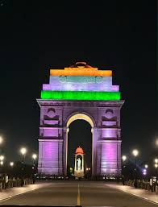
India Gate, Delhi
War memorial and open area ideal for evening walks and views of Rajpath.
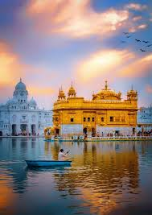
Golden Temple, Amritsar
Sacred Sikh shrine with a peaceful lake and free community kitchen (langar).

Qutub Minar, Delhi
Historic minaret surrounded by ruins, part of a UNESCO World Heritage Site.
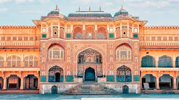
Amber Fort, Jaipur
Hilltop fort with courtyards, halls and views of Jaipur, often visited in the morning.
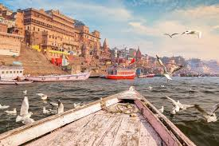
Ganga Ghats, Varanasi
Steps leading down to the River Ganga, known for evening aarti and boat rides.
Nature & Hill Destinations
For travellers who prefer cool weather and scenic landscapes, these are some popular North Indian hill and nature destinations.
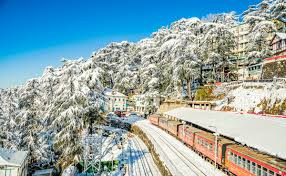
Shimla
Former summer capital of British India, known for Mall Road, ridge views and nearby Kufri.
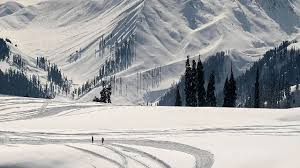
Kashmir (Srinagar / Gulmarg)
Famous for Dal Lake, houseboats, meadows and snow. Ideal for scenic stays and winter sports.
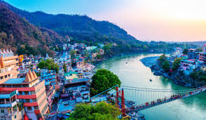
Rishikesh
Yoga capital of the world on the banks of the Ganga, also known for rafting and suspension bridges.
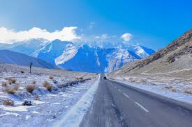
Leh–Ladakh
High-altitude desert with monasteries, lakes like Pangong, and adventure bike routes.
Sample 5-Day North India Itinerary
This example plan helps a traveller cover major highlights in a short trip.
- Day 1 – Delhi: Arrive in Delhi. Visit India Gate, Qutub Minar and Connaught Place.
- Day 2 – Delhi: Explore Red Fort, Chandni Chowk (rickshaw ride), Jama Masjid and Lotus Temple.
- Day 3 – Agra: Travel to Agra in the morning. Visit Taj Mahal and Agra Fort. Stay overnight or return.
- Day 4 – Jaipur: Drive to Jaipur. Visit Amber Fort and Jal Mahal. Evening at local markets.
- Day 5 – Jaipur: See City Palace and Hawa Mahal. Shopping and then return to home city.
Approximate Budget for a 5-Day Trip
Costs vary by season and hotel type. The table below gives a rough idea for one traveller.
| Category | Estimated Cost (₹) | Notes |
|---|---|---|
| Inter-city Travel | 2000 – 5000 | Train or bus between Delhi, Agra and Jaipur. |
| Local Transport | 300 – 600 per day | Metro, autos, app-based cabs. |
| Accommodation | 1500 – 3000 per night | Mid-range hotels or guest houses. |
| Sightseeing Tickets | 500 – 1500 total | Depends on monuments chosen. |
| Shopping & Extras | Optional | Handicrafts, clothes, souvenirs. |
Best Time to Visit North India
- October to March: Pleasant weather in most cities; ideal for sightseeing.
- April to June: Very hot in plains; good time only for hill stations like Manali or Shimla.
- July to September: Monsoon season; some mountain roads may have landslides or closures.
- Winter (Dec–Jan): Very cold in hills and some plains; carry proper warm clothes.
Safety & Travel Tips for North India
- Use metro trains and authorised cabs when possible in big cities like Delhi.
- Keep some cash for small shops and autos, but avoid carrying very large amounts.
- Book trains, flights and hotels in advance during festival and holiday seasons.
- Respect dress codes and rules inside temples, mosques and gurudwaras.
- Check weather conditions before travelling to hill stations or high-altitude areas.
Quick Comparison of North Indian Destinations
| City / Place | Best For | Must-Visit Highlights | Suggested Stay |
|---|---|---|---|
| Delhi | Monuments, markets, museums | Red Fort, India Gate, Qutub Minar, Lotus Temple | 2–3 days |
| Jaipur | Royal history & forts | Amber Fort, City Palace, Hawa Mahal | 2 days |
| Agra | World-famous monument | Taj Mahal, Agra Fort | 1–2 days |
| Manali / Shimla | Hills & adventure | Solang Valley, Mall Road, local treks | 3–4 days |
| Varanasi | Culture & spirituality | Ganga Aarti, ghats, old city lanes | 2 days |